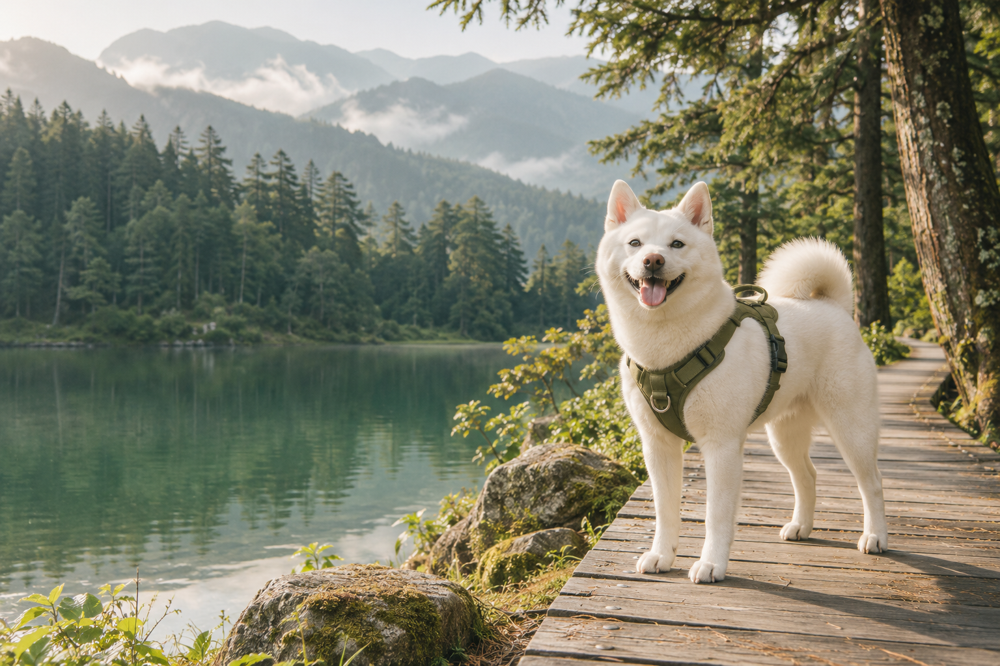

A LITTLE PAW, A BIG WORLD
日子慢慢，
和伊恩去流浪。
山裡的風、海邊的浪，還有腳邊的你。
跟著白柴伊恩老大，把平凡的日子走成喜歡的風景。
最好的風景，是一起走過的路。

SAMPLE PHOTO · 範例圖片WITH IAN
SINCE EVERY DAY
SINCE EVERY DAY
今日份的小確幸有山、有風，還有一隻快樂的柴。
01 / OUR LITTLE JOURNEY往山裡走走在海邊放空毛孩一起出發每一個腳印，都值得收藏。
THE TRAVEL JOURNAL
把旅行，寫成日常
有些風景，想和你再去一次。
這是伊恩的示範手帳：日記、日期與景點皆為範例內容，等你填入真實回憶。
MEET YOUR TRAVEL BUDDY
本汪伊恩，今天也想出門。
一隻白柴、一份好奇心，和永遠聞不完的世界。
走慢一點沒關係，重要的是我們一起。
旅途中的小隊長
伊恩老大
伊恩老大
PAWS ARE WELCOME
帶著伊恩，也能好好玩
先收藏靈感，再確認出發的每一個小細節。
友善景點為示範資料，並非店家承諾。出發前請向場地方確認開放時間、牽繩規定、寵物入內範圍與額外費用。
OUR NEXT ADVENTURE
下一站，慢慢安排
留一點空白，給散步、發呆，還有意外的小驚喜。
自動儲存在這台裝置的瀏覽器。可用「儲存手帳」匯出備份。
A LITTLE TRAVEL BUDGET
快樂很大，花費算清楚
記下每一筆小花費，下一趟旅行更有底。
| 項目 | 分類 | 金額 | 操作 |
|---|
目前預載範例花費，可刪除後加入實際支出。幣別為新臺幣。
LITTLE MOMENTS, BIG MEMORIES
鏡頭裡，都是喜歡
收藏伊恩的每一個可愛瞬間。
目前使用 AI 範例圖片與原創風景插畫；之後可直接替換成伊恩的真實照片。
世界很大，我們慢慢走。
下一頁的故事，留給下一次出發。
回到手帳首頁 ↑